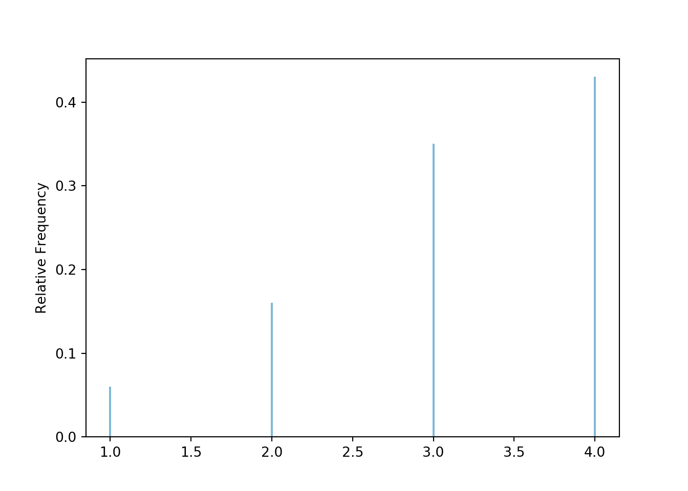
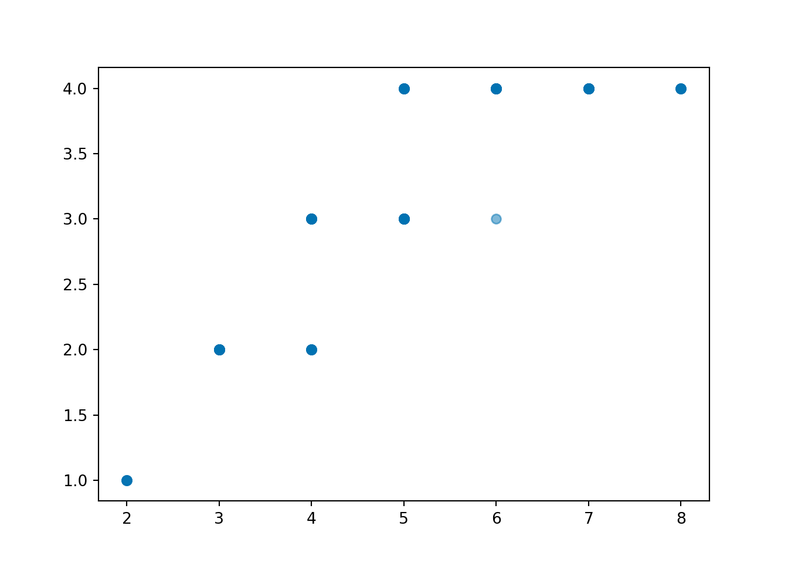
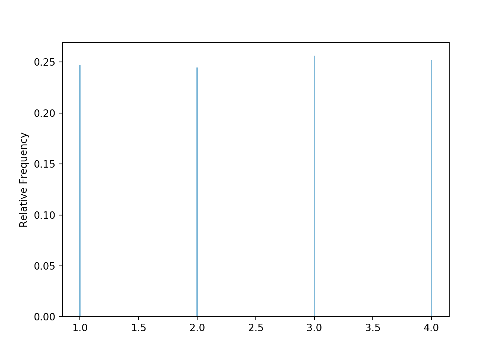

3.2 Computer simulation: Symbulate
Note: some of the plots and tables in this and the following sections are not displayed properly in the text. See the accompanying Jupyter notebooks for a better representation of Symbulate output.
We will perform computer simulations using the Python package Symbulate. The syntax of Symbulate mirrors the language of probability in that the primary objects in Symbulate are the same as the primary components of a probability model: probability spaces, random variables, events. Once these components are specified, Symbulate allows users to simulate many times from the probability model and summarize the results.
This section contains a brief introduction to Symbulate; many more examples can be found throughout the text or in the Symbulate documentation. Remember to first import Symbulate during a Python session using the command
3.2.1 Simulating outcomes
We continue Example 3.1 from Section 3.1 where \(X\) is the sum of two rolls of a fair four-sided die, and \(Y\) is the larger of the two rolls (or the common value if a tie). The following Symbulate code defines a probability space35 P for simulating the 16 equally likely ordered pairs of rolls via a box model.
The above code tells Symbulate to draw 2 tickets (size = 2), with replacement36, from a box with tickets labeled
1, 2, 3, and 4 (entered as the Python list [1, 2, 3, 4]). Each simulated outcome consists of an ordered37 pair of rolls. The sim(n) command simulates n realizations of probability space outcomes (or events or random variables).
## <symbulate.results.Results object at 0x00000000207D6F48>3.2.2 Simulating random variables
A Symbulate RV is specified by the probability space on which it is defined and the mapping function which defines it. Recall that \(X\) is the sum of the two dice rolls and \(Y\) is the larger (max).
The above code simply defines the random variables. Since a random variable \(X\) is a function, any RV can be called as a function38 to return its value \(X(\omega)\) for a particular outcome \(\omega\) in the probability space.
## Warning: Calling an RV as a function simply applies the function that defines the RV to the input, regardless of whether that input is a possible outcome in the underlying probability space.
## Warning: Calling an RV as a function simply applies the function that defines the RV to the input, regardless of whether that input is a possible outcome in the underlying probability space.
## 5 3The following commands simulate 100 values of the random variable Y and store the results as y. For consistency with standard notation, the random variable itself is denoted with an uppercase letter Y, while the realized values of it are denoted with a lowercase letter y.
## <symbulate.results.RVResults object at 0x000000001FA99748>Values and their frequencies can be summarized using tabulate.
## {2: 16, 4: 43, 1: 6, 3: 35}By default, tabulate returns frequencies (counts). Adding the argument normalize = True returns relative frequencies (proportions).
## {2: 0.16, 4: 0.43, 1: 0.06, 3: 0.35}Methods like sim and tabulate can be chained together in a single line of code.
## {2: 0.17, 4: 0.44, 1: 0.09, 3: 0.3}Each call to sim reruns the simulation to generate a new set of simulated values. To perform multiple operations on a single set of simulated values, store the simulation results as a variable (like y above). When running Y.sim(100) Symbulate simulates, in the background, outcomes from the probability space P and then computes Y for these outcomes; however, the outcomes themselves are not saved. (We will soon see how to simulate multiple quantities simultaneously.)
We can plot the 100 individual simulated values of \(Y\) in a rug plot.

The rug plot emphasizes that realizations of the random varible \(Y\) are numbers along a number line. However, the rug plot does not adequately summarize the relative frequencies. Instead, calling .plot() produces39 an impulse plot which displays the simulated values and their relative frequencies.

3.2.3 Approximating distributions
The true distribution of \(Y\) is displayed in Figure XXX. The plot above, based on only 100 simulated values, provides a poor approximation to the distribution of \(Y\). We often initially simulate a small number of repetitions to see what the simulation is doing and check that it is working properly. However, in order to accurately approximate probabilities or distribution we simulate a large number of repetitions (usually thousands for our purposes).
Now we simulate 10,000 values of the random variable Y and summarize the simulation output to approximate the distribution of \(Y\). Since the simulation results below are stored as y, the same set of results is used to produce the table and the plot. Compare the simulation results with Table XXX and Figure XXX. The results of 10000 repetitions provide a much better approximation to the true distribution of \(Y\) than the results of just 100 repetitions.
## {4: 4412, 1: 611, 3: 3162, 2: 1815}## Traceback (most recent call last):
## File "C:\Users\kjross\Anaconda3\lib\site-packages\matplotlib\backends\backend_qt5.py", line 508, in _draw_idle
## self.draw()
## File "C:\Users\kjross\Anaconda3\lib\site-packages\matplotlib\backends\backend_agg.py", line 388, in draw
## self.figure.draw(self.renderer)
## File "C:\Users\kjross\Anaconda3\lib\site-packages\matplotlib\artist.py", line 38, in draw_wrapper
## return draw(artist, renderer, *args, **kwargs)
## File "C:\Users\kjross\Anaconda3\lib\site-packages\matplotlib\figure.py", line 1709, in draw
## renderer, self, artists, self.suppressComposite)
## File "C:\Users\kjross\Anaconda3\lib\site-packages\matplotlib\image.py", line 135, in _draw_list_compositing_images
## a.draw(renderer)
## File "C:\Users\kjross\Anaconda3\lib\site-packages\matplotlib\artist.py", line 38, in draw_wrapper
## return draw(artist, renderer, *args, **kwargs)
## File "C:\Users\kjross\Anaconda3\lib\site-packages\matplotlib\axes\_base.py", line 2607, in draw
## self._update_title_position(renderer)
## File "C:\Users\kjross\Anaconda3\lib\site-packages\matplotlib\axes\_base.py", line 2548, in _update_title_position
## ax.xaxis.get_ticks_position() in choices):
## File "C:\Users\kjross\Anaconda3\lib\site-packages\matplotlib\axis.py", line 2146, in get_ticks_position
## self._get_ticks_position()]
## File "C:\Users\kjross\Anaconda3\lib\site-packages\matplotlib\axis.py", line 1833, in _get_ticks_position
## minor = self.minorTicks[0]
## IndexError: list index out of range
Figure 3.3: Simulation-based approximate distribution of \(Y\), the larger (or common value if a tie) of two rolls of a fair four-sided die.
The following is a summary of a simulation of \(X\) values. Compare with XXX
## {8: 618, 7: 1200, 4: 1832, 6: 1940, 5: 2446, 3: 1287, 2: 677}
3.2.4 Simulating events
Events can also be defined and simulated. For programming reasons, events are enclosed in parentheses () rather than braces \(\{\}\).
A realization of an event is True if the event occurs for the simulated outcome, or False if not.
## <symbulate.results.Results object at 0x000000002B49C808>For logical equality use a double equal sign ==. For example, (Y == 3) represents the event \(\{Y=3\}\).
## {True: 3237, False: 6763}3.2.5 Simulating multiple random variables
We can simulate \((X, Y)\) pairs using40 &. We store the simulation output as xy to emphasize that xy contains pairs of values.
## <symbulate.results.RVResults object at 0x000000002B4A0AC8>Pairs of values can also be tabulated.
## {(3, 2): 15, (6, 4): 15, (4, 3): 10, (5, 4): 9, (7, 4): 16, (8, 4): 6, (4, 2): 7, (2, 1): 5, (5, 3): 16, (6, 3): 1}## {(3, 2): 0.15, (6, 4): 0.15, (4, 3): 0.1, (5, 4): 0.09, (7, 4): 0.16, (8, 4): 0.06, (4, 2): 0.07, (2, 1): 0.05, (5, 3): 0.16, (6, 3): 0.01}Individual pairs can be plotting in a scatter plot, which is a two-dimensional analog of a rug plot.

The values can be “jittered” slightly, as in Figure ??, so that points do not coincide.

The two-dimensional analog of an impulse plot is a tile plot. For two discrete variables, the 'tile' plot type produces a tile plot (a.k.a. heat map) where rectangles represent the simulated pairs with their relative frequencies visualized on a color scale.

We can add the impulse plot for each of each \(X\) and \(Y\) in the margins of the tile plot using the 'marginals' argument.

3.2.6 Simulating outcomes and random variables
Recall Table 3.1 which displays both the outcomes of the two rolls and the corresponding values of \(X\) and \(Y\) for 10 repetitions. Calling (X & Y).sim(10) as in the previous section produces results like those in the table, but only the values of (X & Y) are saved and displayed. The outcomes of the rolls are generated in the background but not saved.
We can create a RV which returns the outcomes of the probability space41. The default mapping function for RV is the identity function, \(g(u) = u\), so simulating values of U=RV(P) below returns the outcomes of the BoxModel P representing the outcome of the two rolls.
## <symbulate.results.RVResults object at 0x000000002E664188>Now we can simulate and display the outcomes along with the values of \(X\) and \(Y\) using &.
## <symbulate.results.RVResults object at 0x000000002B537C88>Because the probability space P returns pairs of values, U=RV(P) abve defines a random vector. The individual components^[The components can also be accessed using brackets. U1, U2 = RV(P) is shorthand for
U = RV(P)
U1 = U[0]
U2 = U[1] Python uses zero-based indexing, so 0 refers to the first components, 1 to the second, and so on.] of U can be “unpacked” as U1, U2 in the following. Here U1 represents the result of the first roll and U2 the second.
## <symbulate.results.RVResults object at 0x000000002B57F248>3.2.7 Simulating equally likely outcomes
In the code above we used a box model to specify the probability space correspoding to pairs of rolls of a four-sided die. When tickets are equally likely and sampled with replacement, a Discrete Uniform model can also be used. Think of a DiscreteUniform(a, b) probability space corresponding to a spinner with sectors of equal area labeled with integer values from a to b (inclusive). For example, the spinner in Figure 3.1 corresponds to DiscreteUniform(1, 4).
In the following, \(U\) represents the result of a single roll of a fair four-sided die. The default mapping function in RV is the identity, so U = RV(P) represents42 \(U(\omega) = \omega\).

For two rolls the probability space corresponds to spinning the DiscreteUniform spinner two times, which is coded43 as DiscreteUniform(a = 1, b = 4) ** 2. The first line below has the same effect44 as BoxModel([1, 2, 3, 4], size = 2, replace = True).
P = DiscreteUniform(a = 1, b = 4) ** 2
X = RV(P, sum)
Y = RV(P, max)
plt.figure()
(X & Y).sim(10000).plot(['tile', 'marginals'])
plt.show()
3.2.8 Brief summary of Symbulate commands
Many scenarios require only a few lines of Symbulate code to set up, run, analyze, and visualize. Table comprises the requisite Symbulate commands for a wide variety of situations.
| Command | Function |
|---|---|
BoxModel |
Define a box model |
ProbabilitySpace |
Define a custom probability space |
RV |
Define random variables, vectors, or processes |
RandomProcess |
Define a discrete or continuous time stochastic process |
apply |
Apply transformations |
[] (brackets) |
Access a component of a random vector, or a random process at a particular time |
* (and **) |
Define independent probability spaces or distributions |
AssumeIndependent |
Assume random variables or processes are independent |
| (vertical bar) |
Condition on events |
& |
Join multiple random variables into a random vector |
sim |
Simulate outcomes, events, and random variables, vectors, and processes |
tabulate |
Tabulate simulated values |
plot |
Plot simulated values |
filter (and relatives) |
Create subsets of simulated values (filter_eq, filter_lt, etc) |
count (and relatives) |
Count simulated values which satisfy some critera (count_eq, count_lt, etc) |
| Statistical summaries | mean, median, sd, var, quantile, corr, cov, etc. |
| Common models | See Chapters ?? and ?? |
While no previous experience with Python is required, it is also possible to incorporate Python programming with Symbulate code. In particular, Python functions or loops can be used: to define or transform random variables or stochastic processes, or to investigate the effects of changing parameter values. Also, while many common plots are built in with the Symbulate plot function, the Matplotlib package can be used to create or customize plots. Some of these features will be illustrated in the next section and more examples are found throughout the text.
3.2.9 Exercises
Example 3.4 Flip a coin 4 times and let \(X\) be the number of H.
- Write the Symbulate code to define X using a box model with tickets labeled H and T. Simulate a few outcomes and a few values of X.
- Write the Symbulate code to define X using a box model with tickets labeled 1 and 0 and without counting. Simulate a few outcomes and a few values of X.
- Write the Symbulate code to conduct a simulation and use the results to approximate \(\IP(X = 3)\).
Solution.
to Example 3.3. See code below. Note the use of count_eq with the H/T labels and sum with the 1/0 labels. (It is also possible to use count_eq(1) with the 1/0 labels, but the point of indicators is that they turn counting into summing.)
## <symbulate.results.Results object at 0x000000002EB49048>## <symbulate.results.RVResults object at 0x000000002EB492C8>## 0.2443## <symbulate.results.Results object at 0x000000002EB49508>## <symbulate.results.RVResults object at 0x000000002E4BB1C8>## 0.2545Technically, a probability space is a triple \((\Omega, \mathcal{F}, \IP)\). We primarily view a Symbulate probability space as a description of the probability model rather than an explicit specification of \(\Omega\). For example, we define a
BoxModelinstead of creating a set with all possible outcomes. We tend to represent a probability space withP, even though this is a slight abuse of notation.↩︎The default argument for
replaceisTrue, so we could have just writtenBoxModel([1, 2, 3, 4], size = 2).↩︎There is an additional argument
order_matterswhich defaults toTrue, but we could set it to false for unordered pairs.↩︎The warning you get when you call a
RVas a function just means that Symbulate is not going to check for you that the inputs to the function you used to define theRVactually match up with the outcomes of the probability spaceP.↩︎For discrete random variables
'impulse'is the default plot type. Like.tabulate(), the.plot()method also has anormalizeargument; the default isnormalize=True.↩︎Technically
&joins twoRVs together to form a random vector. While we often intepret SymbulateRVas random variable, it really functions as random vector.↩︎You might try
(P & X ).sim(10). ButPis a probability space object, andXis anRVobject, and&can only be used to join like objects together. Much like in probability theory in generality, in Symbulate the probability space plays a background role, and it is usually random variables we are interested in.↩︎For technical reasons, Symbulate will not plot simulated outcomes from a
ProbabilitySpace, only simulated realizations of anRV. Essentially, as mentioned in earlier sections, probability space outcomes can be anything — not necessarily numbers — and so there are too many potential situations and plots for Symbulate to handle with a singleplotcommand. In contrast, simulated realizations ofRVare numbers (or vectors of numbers) which facilitates plotting. Plotting simulated outcomes from a probability spacePwith numerical outcomes can be achieved by first definingX = RV(P)and then simulating and plotting values ofX. That is, replaceP.sim(1000).plot()withRV(P).sim(1000).plot(). However, this only works if the outcomes ofPare numerical.↩︎For now you can interpret
DiscreteUniform(a = 1, b = 4)as a spinner with four quarters labeled 1, 2, 3, 4, and** 2as “spin the spinner twice”. In Python,**represents exponentiation; e.g.,2 ** 5 = 32. SoDiscreteUniform(a = 1, b = 4) ** 2is equivalent toDiscreteUniform(a = 1, b = 4) * DiscreteUniform(a = 1, b = 4). Future sections will reveal why the product*notation is natural for independent spins of spinners.↩︎BoxModelassumes equally likely tickets by default, but there are options for non-equally likely cases.↩︎